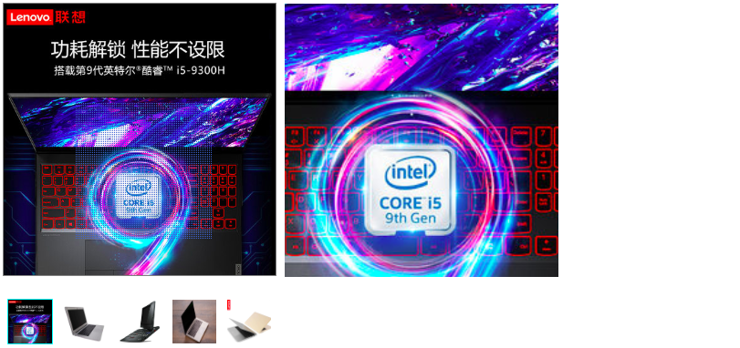

组件使用less，请确保已安装loader
本组件为放大镜组件，传参列表为:
picList:必传，传入图片列表
script:
import mirror from 'xx/mirror'
export default {
components:{
mirror
},
data(){
return {
width:300,
picList:[
xxxxxx,
xxxxxx
],
}
}
}html:
<mirror :width="width" :picList="picList" /> HTML:
<template>
<div class="mirror">
<div class="wrap" :style="{width:width+'px',height:width+'px'}" >
<div ref="truth" :style="{width:'100%',height:'100%'}" @mousemove="move" @mouseenter="showMagnify" @mouseleave="hideMagnify">
<div class="mask" ref="mask" v-show = "showMask" :style="{width:width/2+'px',height:width/2+'px',left:maskPosition.x+'px',top:maskPosition.y+'px'}"></div>
<img :src="picList[picIndex]" draggable="false"/>
</div>
<div class="virtual" ref="virtual" v-if = "isShowVirtual" :style="{width:width+'px',height:width+'px'}" >
<div class="big" ref = "bigPic" :style="{position:'absolute',width:2*width+'px',height:2*width+'px',backgroundSize:'100% 100%',backgroundImage:`url(${picList[picIndex]})`,left:percent.x, top:percent.y}" >
</div>
</div>
</div>
<ul class="picList" :style="{width:width+'px'}">
<li v-for = "(item,index) in picList" :class="{now:index==picIndex}" :data-index="index" :key ="item" @mouseenter="changeIndex">
<img :src ="item" />
</li>
</ul>
</div>
</template>JS:
export default {
props:['width','picList'],//宽度是用来给放大镜的
data(){
return {
picIndex:0,
isShowVirtual:false,
showMask:false,
maskPosition:{},
percent:{},
}
},
methods:{
computedOffset(obj,prop){ //计算元素到body的绝对位置
if(obj==document.body || obj.offsetParent == document.body){
return parseInt(obj[prop])
}
return parseInt(obj[prop])+this.computedOffset(obj.offsetParent,prop)
},
changeIndex(e){
this.picIndex = e.target.dataset.index
},
showMagnify(e){
this.showMask=true;
this.isShowVirtual = true;
},
hideMagnify(){
this.isShowVirtual=false;
this.showMask=false
},
computePosition(e){
let x = e.pageX,y = e.pageY;
let mask = this.$refs.mask;
let truth = this.$refs.truth;
let virtual = this.$refs.virtual;
let bigPic = this.$refs.bigPic;
x = x-this.computedOffset(truth,'offsetLeft') -mask.offsetWidth/2;
y = y-this.computedOffset(truth,'offsetTop')- mask.offsetHeight/2;
if(x<=0) {
x=0
}else if(x>truth.offsetWidth - mask.offsetWidth){
x = truth.offsetWidth/2
}
if(y<=0){
y=0;
}
else if(y>truth.offsetHeight - mask.offsetHeight){
y = truth.offsetHeight/2
}
this.maskPosition = {
x,y
}
//计算比例
this.percent={
x:-x/(truth.offsetWidth-mask.offsetWidth)*(bigPic.offsetWidth - virtual.offsetWidth)+'px',
y:-y/(truth.offsetHeight-mask.offsetHeight)*(bigPic.offsetHeight - virtual.offsetHeight)+'px'
}
},
move(e){
this.computePosition(e)
}
}
}CSS:
<style lang="less" scoped>
.now{
border-color: cyan !important;
}
.mirror{
width:100%;
.wrap{
user-select: none;
margin-bottom: 20px;
position: relative;
background-color: #fff;
border:1px solid gray;
box-sizing:border-box;
cursor: pointer;
img{
width:100%;
height:100%;
}
.virtual{
overflow:hidden;
width:100%;
height:100%;
position:absolute;
left:calc(100% + 10px);
top:0;
background-repeat:no-repeat
}
.mask{
position: absolute;
background-image: url('https://img-tmdetail.alicdn.com/tps/i4/T12pdtXaldXXXXXXXX-2-2.png');
background-repeat:repeat;
cursor: move;
}
}
.picList{
width:100%;
display: flex;
justify-content: space-between;
flex-wrap:wrap;
li{
width:50px;
height:50px;
margin:5px;
border:1px solid transparent;
box-sizing: border-box;
img{
width:100%;
height:100%
}
}
}
.picList:after{
content:"";
flex:auto;
}
}
</style>可直接复制文件内容至项目使用，文件地址：https://blog-static.cnblogs.com/files/hhyf/mirror.vue.js
